Директор по продажам — ключевая фигура, от которой зависит рост компании, развитие клиентской базы и эффективность команды. Чтобы успешно управлять отделом продаж и выстраивать воронку продаж, руководителю необходимы глубокие знания стратегий продажам, навыки мотивации менеджеров и умение разрабатывать эффективные методы повышения квалификации сотрудников. Обучение на РОПа (руководителя отдела продаж) помогает освоить практические навыки управления, внедрения стратегии и планирования, а также изучить современные инструменты аналитики и построения эффективных систем мотивации. Курсы проводятся в дистанционном формате, что позволяет совмещать обучение с работой, а по успешном прохождении обучения слушателям выдаются дипломы государственного образца. Мы составили рейтинг программ, которые помогут повысить квалификацию, освоить профессиональные навыки и научиться управлять отделом продаж с максимальной эффективностью.
Информация обновлена:
ТОП онлайн-курсов обучения на Директора по Продажам
- 🏆 Директор по продажам — Академия Eduson (по промокоду kursy скидка 🎁 5%)
- 🏆 Директор по продажам — Московская Бизнес Академия (по промокоду onlinekursy скидка 🎁 10%)
- 🏆 Директор по продажам — Moscow Business School
- Директор по продажам — Русская Школа Управления
- Директор по продажам — City Business School
- MBA: Управление продажами — Академия Eduson (по промокоду kursy скидка 🎁 5%)
- Руководитель отдела продаж — Академия Eduson (по промокоду kursy скидка 🎁 5%)
- MBA: Управление коммерцией и закупками — Академия Eduson (по промокоду kursy скидка 🎁 5%)
- Руководитель отдела продаж — АНО ДПО «НАДПО»
- Руководитель отдела продаж B2B и B2C — МИПО (по промокоду onlinekursy действует скидка 🎁 10% )
- Руководитель отдела продаж: эффективные продажи — Skillbox
- Руководитель отдела продаж — Яндекс Практикум
- Руководитель отдела продаж — Бруноям
- Руководитель отдела продаж — Нетология
- Руководитель отдела продаж — Русская Школа Управления
- Директор по продажам — НЦПО
- Руководитель отдела продаж — АПОК
- Руководитель отдела продаж — ЭКОДПО
- Тренинг для руководителей отдела продаж — Outstaffing Company
Бесплатные курсы по обучению на Директора по продажам
- Профессия «Руководитель отдела продаж», бесплатно – Eduson Academy
- Эффективные стратегии мотивации менеджеров – Stepik
Отличительные преимущества каждой дистанционной программы обучения на руководителя отдела продаж
| № | Название курса и школа | Отличительные преимущества | |
|---|---|---|---|
| 🥇 | Директор по продажам — Академия Eduson | Преподаватели из Гарварда и Стэнфорда, диплом гос. образца, помощь в трудоустройстве (Сбер, М.Видео, Mercedes-Benz), пожизненный доступ к материалам. | Перейти |
| 🥈 | Директор по продажам – Московская Бизнес Академия | Диплом ФРДО, обновлённая программа 2025, карьерное сопровождение, модуль по искусственному интеллекту, практические задания и консультации менеджеров. | Перейти |
| 🥉 | Директор по продажам — Moscow Business School | Интенсив 5 дней, очно/дистанционно, 85% выпускников получают повышение, преподаватели-практики, реальные кейсы, сертификат гос. образца. | Перейти |
| 4 | Директор по продажам — Русская Школа Управления | 5-дневный курс с сертификатом ФРДО, 70% практики, преподаватели из РАНХиГС и b2b-эксперты, доступ к материалам навсегда. | Перейти |
| 5 | Директор по продажам — City Business School | Геймификация, диплом международного образца, модуль по ИИ, сообщество выпускников, 24/7 доступ к платформе. | Перейти |
| 6 | MBA: Управление продажами — Академия Eduson | 224 урока и 25 кейсов, гарвардская методика, диплом Eduson, консультация эксперта, доступ к обновлениям навсегда. | Перейти |
| 7 | Руководитель отдела продаж — Академия Eduson | Методология Масоловой и Harvard-преподавателей, консультация в подарок, поддержка куратора год, нейросети в продажах. | Перейти |
| 8 | MBA: Управление коммерцией и закупками — Академия Eduson | Гарвардская кейс-методика, преподаватели из Ozon, Газпромбанка, МГИМО, диплом гос. образца, 13% налоговый вычет. | Перейти |
| 9 | Руководитель отдела продаж – АНО ДПО «НАДПО» | Диплом ФИС-ФРДО, кешбэк и 0% рассрочка, библиотека ЛитРес, 240 часов, акцент на KPI и аналитику. | Перейти |
| 10 | Руководитель отдела продаж B2B и B2C — МИПО | Диплом MBA (ФРДО), 72% трудоустраиваются, 1260 часов, реальные кейсы B2B/B2C, менторская поддержка. | Перейти |
| 11 | Руководитель отдела продаж: эффективные продажи — Skillbox | Гарантия трудоустройства или возврат денег, 50% практики, 8 преподавателей из бизнеса, бессрочный доступ, ежемесячные кейс-разборы. | Перейти |
| 12 | Руководитель отдела продаж — Яндекс Практикум | Менторы из Яндекса и Циана, 4 живые встречи, 75% практики, работа с ИИ, гибкий график, диплом о повышении квалификации. | Перейти |
| 13 | Руководитель отдела продаж — Бруноям | 80% практики, карьерная помощь, наставники в Telegram, обновлённая программа 2025, гарантия возврата средств. | Перейти |
| 14 | Руководитель отдела продаж — Нетология | Диплом гос. образца, реальные кейсы, нейросети в продажах, преподаватели из Сбера, Додо Пиццы, ВкусВилла. | Перейти |
| 15 | Руководитель отдела продаж — Русская Школа Управления | 70% практики, удостоверение ФРДО, преподаватели — действующие b2b-эксперты, бессрочный доступ к материалам. | Перейти |
| 16 | Директор по продажам — НЦПО | Самый доступный по цене курс (от 3900 ₽), удостоверение ФРДО, дистанционно 24/7, реестр гос. образца. | Перейти |
| 17 | Руководитель отдела продаж — АПОК | Быстрое обучение от 3 недель, диплом ФРДО, 0% рассрочка, современный формат с кейсами, бесплатная доставка документов. | Перейти |
| 18 | Руководитель отдела продаж — ЭКОДПО | Самая короткая программа (от 2 недель), бесплатная доставка удостоверений, неограниченные пересдачи, персональный план обучения. | Перейти |
| 19 | Тренинг для руководителей отдела продаж — Outstaffing Company | Индивидуальные программы, практические кейсы, тренеры-консультанты, корпоративный формат, выдача диплома или сертификата. | Перейти |
1. 🏆 Директор по продажам — Академия Eduson
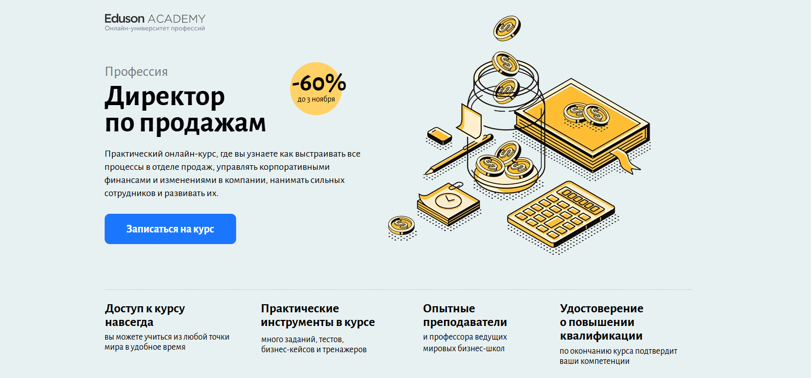
- ✅ Официальный сайт: eduson.academy
- 💸 Цена обучения: от 84 000 ₽ со скидкой 60%.
- 💳 Рассрочка: беспроцентная от 7 000 ₽/мес на 12 месяцев, оформление онлайн за 2 минуты.
- 📚 Формат: дистанционный формат, видеолекции, практические задания, тесты, бизнес-кейсы и тренажёры с обратной связью.
- ⏳ Продолжительность: в среднем 4 месяца, обучение проходит в удобном темпе.
- 📜 Документ: удостоверение о повышении квалификации и официальный диплом установленного образца.
- 📝 Трудоустройство: помощь в составлении резюме, рекомендации HR-специалистов, передача резюме партнёрам — «Сбер», «М.Видео», Mercedes-Benz, МТС.
- 🔷 Для кого подходит курс: для коммерческих директоров, руководителей отделов продаж, владельцев бизнеса и амбициозных менеджеров, стремящихся повысить квалификацию и управленческие навыки.
Особенности:
Программа разработана для тех, кто хочет научиться управлять отделом продаж и повысить эффективность команды с помощью современных инструментов. Курс сочетает теорию и практику, основан на опыте компаний с многомиллионными оборотами. Студенты изучат методы внедрения стратегии продаж, построения воронки и управления KPI. Обучение проходит в дистанционном формате с доступом навсегда, что позволяет совмещать карьеру и учёбу. По окончании обучения выдается официальный документ о повышении квалификации. Участники освоят навыки мотивации сотрудников, разработки стандартов продаж и анализа ключевых показателей эффективности.
Чему учатся студенты:
- Выстраивать эффективные стратегии продаж и управлять показателями эффективности
- Формировать сильную команду и мотивировать персонал
- Анализировать воронку продаж и применять методы повышения эффективности
- Разрабатывать систему KPI и контролировать её выполнение
- Оценивать сотрудников и внедрять изменения в отделе
- Использовать современные инструменты аналитики и CRM-системы
- Научиться выстраивать процессы продаж и управлять корпоративными финансами
Преподаватели:
- Елена Масолова — основатель Groupon Russia, входит в топ-30 интернет-предпринимателей Forbes, методолог курса.
- Ицхак Адизес — профессор Стэнфорда и Колумбийского университета, мировой эксперт по управлению, основатель Института Адизеса.
- Максим Поташев — бизнес-тренер, маркетолог, многократный победитель «Что? Где? Когда?», управляющий партнёр RP Consulting.
- Джон Стертэван — преподаватель Гарвардской школы бизнеса, 20+ лет опыта в управлении бизнесом.
- Чарльз Крэйвер — профессор Университета Джорджа Вашингтона, эксперт по переговорам, обучил более 100 000 студентов.
- Александр Фридман — консультант по стратегическому менеджменту, автор 15 книг, работает с «Газпром нефть», «Сбербанк», Google.
Преимущества:
- Дистанционное обучение с доступом к материалам навсегда
- Опытные преподаватели из Гарварда, Стэнфорда и ведущих компаний
- Практические инструменты, реальные бизнес-кейсы и задания
- Выдается официальный диплом о повышении квалификации
- Помощь в трудоустройстве и карьерных консультациях
- Возможность совмещать обучение с работой
- Обновления и новые модули без дополнительной оплаты
- Скидка 60% при оплате до 3 ноября
Отзывы учеников:
Студенты отмечают высокий уровень преподавателей, практическую направленность заданий и удобный дистанционный формат обучения. Многие подчеркивают, что курс помог освоить новые управленческие навыки, научиться выстраивать воронку продаж и повысить эффективность отдела. Также положительно оценивают поддержку кураторов и возможность применить знания уже во время прохождения обучения.
Перейти на официальный сайт курса2. 🏆 Директор по продажам – Московская Бизнес Академия
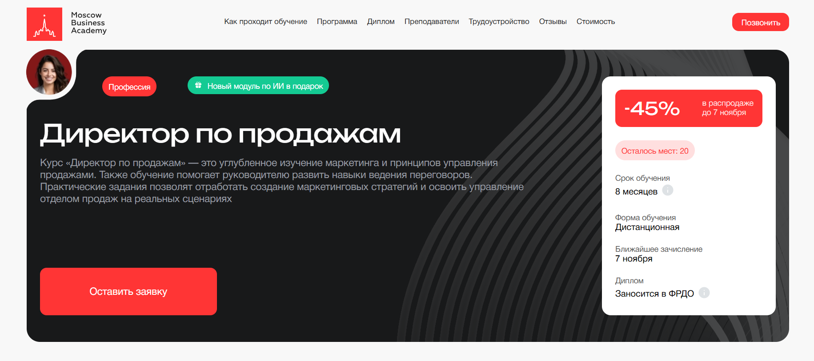
- ✅ Официальный сайт: moscow.mba
- 💸 Стоимость обучения: от 163 900 ₽ со скидкой -45%.
- 💳 Рассрочка: доступна от 6 829 ₽/мес до 36 месяцев без переплат, первый платеж через месяц.
- 📚 Формат: дистанционный формат с видеолекциями, тестами, практическими заданиями, итоговым проектом и обратной связью от преподавателей.
- ⏳ Продолжительность: 8 месяцев.
- 📜 Документ: диплом о профессиональной переподготовке, вносимый в ФРДО.
- 📝 Трудоустройство: помощь в составлении резюме, поиске вакансий и подготовке к собеседованию.
- 🔷 Для кого подходит курс: менеджерам по продажам, предпринимателям, бизнес-владельцам и специалистам, желающим повысить квалификацию и освоить управление отделом продаж.
Особенности:
Обучение в Московской Бизнес Академии проходит в дистанционном формате, что позволяет совмещать учебу с работой. Программа включает изучение стратегий продаж, построения воронки продаж и разработки маркетинговых решений. Участники осваивают методы повышения эффективности и мотивации сотрудников, а также управление отделами продаж в разных бизнес-направлениях. Курс подходит для тех, кто хочет повысить квалификацию, освоить практические навыки и внедрять эффективные стратегии продаж в реальных компаниях. После прохождения обучения выдается диплом государственного образца, подтверждающий профессиональные компетенции. Академия предоставляет поддержку опытных менеджеров и карьерных консультантов, что помогает выпускникам успешно трудоустраиваться и развивать карьеру.
Чему учатся студенты:
- Разрабатывать стратегию продаж и выстраивать воронку продаж
- Научиться управлять отделом продаж и мотивировать команду
- Использовать инструменты CRM-систем и методы анализа данных
- Изучить современные подходы к управлению персоналом и внедрению KPI
- Овладеть практическими инструментами повышения эффективности бизнеса
- Применять финансовое планирование и анализировать ключевые показатели
Преподаватели:
- Ицхак Пинтосевич — эксперт по личностному росту, бизнес-тренер, автор 15 книг, включая «Действуй! 10 заповедей успеха».
- Анастасия Рыжих — эксперт в менеджменте и маркетинге, ментор в БИ МГУ, бизнес-тренер, кандидат наук.
- Ангелина Шам — корпоративный бизнес-психолог, кандидат наук, автор книг по психологии и коммуникациям.
Преимущества:
- Дистанционное обучение с доступом к платформе 24/7
- Программа обновлена в 2025 году и соответствует профессиональным стандартам
- Выдается диплом государственного образца, заносимый в ФРДО
- Опытные преподаватели-практики с реальным опытом управления отделами продаж
- Возможность получить бонусный модуль по искусственному интеллекту
- Поддержка кураторов и обратная связь на всех этапах прохождения обучения
- Карьерное сопровождение и помощь в трудоустройстве после окончания курса
Отзывы учеников:
Студенты Московской Бизнес Академии отмечают высокий уровень преподавателей, большое количество практических заданий и удобный дистанционный формат. Выпускники подчеркивают, что курс помогает освоить современные инструменты продаж, мотивировать сотрудников и управлять показателями эффективности. Многие слушатели после прохождения курса повысили квалификацию и получили повышение на работе.
Перейти на официальный сайт курса3. 🏆 Директор по продажам — Moscow Business School
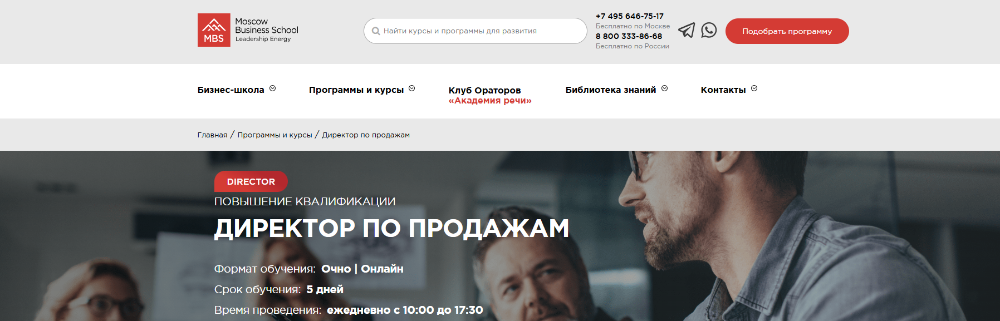
- ✅ Официальный сайт: mbschool.ru
- 💸 Цена: 71 900 ₽ (со скидкой 10% — 64 710 ₽ при оплате онлайн).
- 💳 Рассрочка: доступна от 2 996 ₽/мес, возможна корпоративная скидка для команд от 4 человек.
- 📚 Формат: очное и дистанционное обучение, лекции, практические кейсы, тесты, работа с реальными примерами, консультации с преподавателями.
- ⏳ Продолжительность: 5 дней, 40 академических часов.
- 📜 Документ: по окончании обучения выдаются удостоверение о повышении квалификации или сертификат Moscow Business School.
- 📝 Трудоустройство: выпускники повышают квалификацию и занимают руководящие должности в отделах продаж и маркетинга.
- 🔷 Для кого подходит курс: для руководителей отделов продаж, коммерческих директоров, опытных менеджеров и специалистов, желающих повысить профессиональные навыки и научиться управлять эффективной командой.
Особенности:
Программа направлена на развитие управленческих навыков и формирование стратегического мышления в сфере активных продаж. Участники изучают эффективные методы построения систем продаж, разрабатывают стратегию продажам и учатся внедрять KPI. Курс помогает освоить навыки управления командой, анализировать показатели эффективности и выстраивать воронку продаж. После прохождения обучения выпускники умеют разрабатывать систему мотивации сотрудников и использовать современные инструменты для роста бизнеса. Обучение проходит в удобным форматом — очно или онлайн, с возможностью совмещать обучение с работой. В конце курса слушатель получает официальный документ, подтверждающий повышение квалификации.
Чему учатся студенты:
- Разрабатывать и внедрять эффективные стратегии продаж
- Выстраивать воронку продаж и управлять показателями эффективности
- Научиться управлять отделом продаж и мотивацией сотрудников
- Использовать инструменты аналитики и планирования
- Разрабатывать стандарты продаж и внедрять современные методы управления
Преподаватели:
- Кречетова Ирина Борисовна — MBA, эксперт-практик в построении прибыльного бизнеса, бизнес-тренер, консультант
- Гурьев Василий Сергеевич — бизнес-тренер, консультант-практик по управлению сбытовыми структурами и эффективными отделами продаж
Преимущества:
- 85% выпускников получают повышение после успешного прохождения курсов
- Обучение проводят опытные преподаватели-практики
- Современные форматы обучения: очно, онлайн или в корпоративном формате
- Гарантированное получение документов государственного образца
- Курс включает реальные кейсы и практические инструменты для бизнеса
- Возможность пройти бесплатный пробный урок перед оплатой
- Доступ к библиотеке знаний и платформе дистанционного образования
Отзывы учеников:
Студенты отмечают практическую направленность программы, доступную подачу материала и высокий уровень преподавания. Выпускники подчеркивают, что курс помогает систематизировать знания, выстраивать эффективные отделы продаж и применять полученные навыки уже на работе. Особенно хвалят актуальные кейсы и внимательное отношение преподавателей.
Перейти на официальный сайт курса4. Директор по продажам — Русская Школа Управления
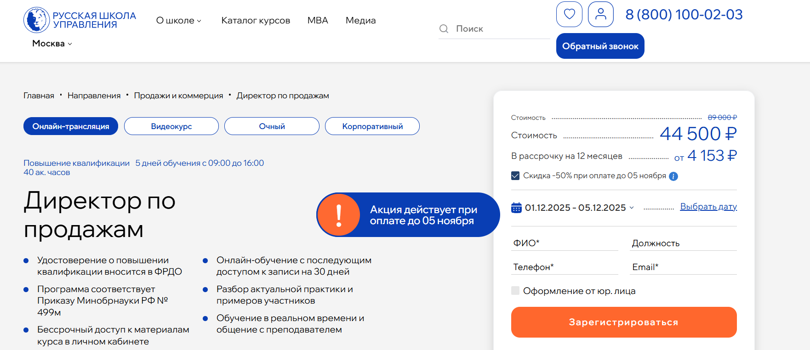
- ✅ Официальный сайт: uprav.ru
- 💸 Цена: от 44 500 ₽ (со скидкой), 89 000 ₽ (полная стоимость).
- 💳 Рассрочка: от 4 153 ₽/мес до 12 месяцев без переплат.
- 📚 Формат: дистанционный формат обучения, онлайн-занятия, видеокурс, прямые эфиры, тесты, практические задания и разбор кейсов.
- ⏳ Продолжительность: 40 академических часов, 5 дней обучения с 09:00 до 16:00.
- 📜 Документ: удостоверение о повышении квалификации государственного образца, данные вносятся в ФРДО.
- 📝 Трудоустройство: курс помогает повысить квалификацию и карьерные возможности, выпускники отмечают рост эффективности работы отделов продаж.
- 🔷 Для кого подходит курс: для руководителей отделов продаж, коммерческих директоров, опытных менеджеров и специалистов, желающих повысить квалификацию и освоить современные методы управления продажами.
Особенности:
Программа обучения охватывает стратегические и практические направления управления продажами и направлена на развитие профессиональных компетенций. Слушатели изучают современные методы анализа рынка, оптимизацию бизнес-процессов и внедрение CRM-систем. Дистанционное обучение проходит на удобной платформе, что позволяет совмещать прохождение курса с работой. Курс помогает научиться управлять эффективной командой, выстраивать воронку продаж и внедрять стратегию продажам с применением цифровых инструментов. После прохождения обучения слушателям выдается официальный документ о повышении квалификации. Материалы курса доступны бессрочно, что позволяет вернуться к ним в любое время для повышения эффективности бизнеса.
Чему учатся студенты:
- Анализировать рынок и определять стратегические группы конкурентов
- Разрабатывать уникальное торговое предложение и стратегию продажам
- Выстраивать воронку продаж и управлять показателями эффективности
- Оптимизировать бизнес-процессы отдела продаж с помощью цифровых решений
- Использовать эффективные методы мотивации менеджеров и персонала
- Научиться управлять отделом продаж и повышать его результативность
- Применять инструменты анализа данных и CRM-системы
Преподаватели:
- Стерхова Светлана Александровна — к.э.н., доцент РАНХиГС, тренер-консультант по управлению инновационными проектами.
- Марков Евгений Эдуардович — бизнес-тренер, консультант-практик по системам продаж и переговорам.
- Васильева Елена Анатольевна — бизнес-консультант, психолог, специалист по организационному развитию и мотивации команд.
- Горбачев Максим Николаевич — эксперт по b2b-продажам, совладелец IT-сервиса автоматизации продаж, реализовал более 100 успешных проектов.
Преимущества:
- 70% практических навыков и 30% теории в процессе обучения
- Возможность проходить курс в дистанционном формате с обратной связью от преподавателя
- Бессрочный доступ к материалам и записям занятий
- Выдаётся удостоверение о повышении квалификации установленного образца
- Опытные преподаватели-практики с управленческим опытом
- Реальные кейсы и практические инструменты для повышения эффективности отдела продаж
- Гарантия официального диплома и внесение данных в федеральный реестр
Отзывы учеников:
Слушатели отмечают удобный дистанционный формат, насыщенную программу и практические инструменты для внедрения в работу. Отмечают профессионализм преподавателей, живые примеры и индивидуальный подход. Многие выпускники сообщают о росте показателей продаж и повышении эффективности команд после прохождения курса.
Перейти на официальный сайт курса5. Директор по продажам — City Business School
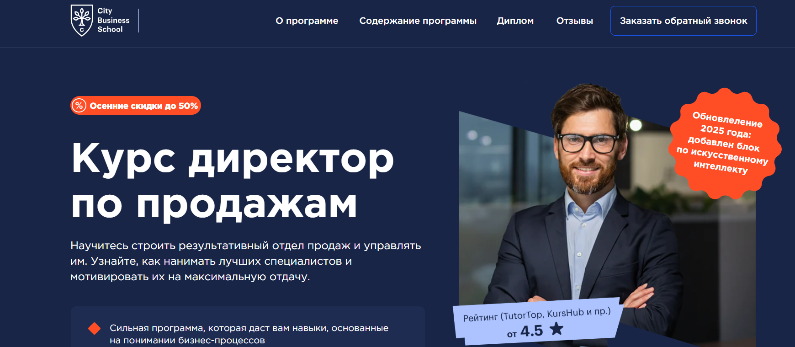
- ✅ Официальный сайт: lp.e-mba.ru
- 💸 Цена обучения: от 58 000 ₽ до 98 000 ₽ в зависимости от выбранного тарифа.
- 💳 Рассрочка: до 24 месяцев без переплат, от 2 417 ₽ в месяц.
- 📚 Формат: дистанционный формат — видеолекции, практические задания, тесты, геймификация, доступ к платформе 24/7.
- ⏳ Продолжительность: от 3 до 7 месяцев в зависимости от пакета.
- 📜 Документ: выдаются диплом о профессиональной переподготовке или удостоверение о повышении квалификации международного образца.
- 📝 Трудоустройство: выпускники повышают квалификацию и карьерный уровень, становятся руководителями отделов продаж и коммерческими директорами.
- 🔷 Для кого подходит курс: для менеджеров по продажам, РОПов, коммерческих директоров и собственников бизнеса, желающих управлять эффективной командой и выстраивать стратегию продаж.
Особенности:
Программа разработана для тех, кто хочет научиться управлять отделом продаж, выстраивать эффективные стратегии и внедрять современные инструменты аналитики. Обучение проходит в дистанционном формате с возможностью совмещать процесс с работой. После прохождения курса слушатели освоят навыки построения отдела, научатся разрабатывать стратегию продажам, внедрять KPI и мотивировать сотрудников. Программа включает блок по искусственному интеллекту, что позволяет использовать инновационные решения в управлении бизнес-процессами. Обучение проходит на платформе дистанционного образования CBS с доступом к материалам, видеоурокам и сообществу выпускников. Студенты осваивают практические инструменты, которые можно применять уже во время прохождения курса.
Чему учатся студенты:
- Разрабатывать стратегию продаж и управлять ключевыми показателями эффективности
- Планировать KPI и анализировать результаты отдела продаж
- Выстраивать воронку продаж и внедрять эффективные методы мотивации сотрудников
- Научиться управлять командой, внедрять стандарты продаж и оценивать эффективность процессов
- Разрабатывать систему материальной и нематериальной мотивации
- Использовать современные цифровые инструменты для анализа клиентской базы
- Оптимизировать бизнес-процессы и взаимодействие с отделом маркетинга
Преподаватели:
- Алексей Урванцев — эксперт по продажам, переговорам и деловой риторике в HR.
- Борис Жалило — титулованный бизнес-тренер России, консультант международного уровня, работал в 17 странах.
- Альберт Тютин — специалист по внедрению современных технологий продаж для малого и среднего бизнеса.
- Михаил Люфанов — создатель Клуба Профессиональных Продавцов SalesPortal.ru.
- Вадим Дозорцев — сооснователь консалтинговой компании "Berner&Stafford".
- Андрей Гавриков — генеральный директор ООО «Комплето», член Гильдии Маркетологов.
- Андрей Ващенко — эксперт по управлению результативностью, преподаватель вузов Москвы, автор 10 книг.
- Константин Дубровин — предприниматель, тренер по продажам сложных услуг, основатель TOPsharing.center.
- Татьяна Сорокина — эксперт по управлению продажами, директор компании «Юнит-Консалтинг».
- Игорь Вагин — директор тренинг-центра, сертифицированный коуч.
Преимущества:
- Дистанционное обучение с удобным форматом и доступом к платформе 24/7
- Выдаются диплом международного образца после успешного прохождения обучения
- Программа обновлена — добавлен модуль по искусственному интеллекту
- Опытные преподаватели с практикой в продажах и управлении бизнесом
- Геймификация и реальные кейсы повышают практическую ценность обучения
- Закрытое сообщество выпускников и профессиональная поддержка
- Рассрочка на 24 месяца и сезонные скидки до 50%
- Дистанционный формат позволяет совмещать обучение с работой
Отзывы учеников:
Студенты отмечают высокий уровень преподавания и структурированный подход. По отзывам, курс помогает выстроить отдел продаж с нуля, внедрить стандарты и повысить эффективность команды. Многие подчеркивают пользу практических кейсов, актуальность методик и возможность получения международного диплома. Положительно оценивают гибкий график обучения и доступ к материалам в любое время.
Перейти на официальный сайт курса6. MBA: Управление продажами — Академия Eduson
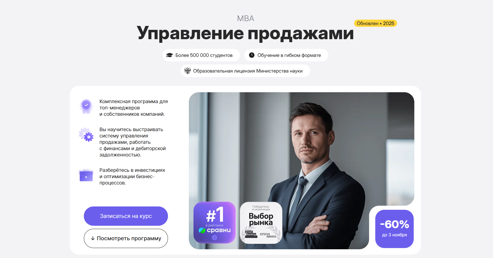
- ✅ Официальный сайт: eduson.academy
- 💸 Цена обучения: от 120 000 ₽ со скидкой 60%.
- 💳 Рассрочка: беспроцентная от 10 000 ₽/мес на 12 месяцев, при единовременной оплате — дополнительная скидка 5%.
- 📚 Формат: дистанционный формат обучения: 224 интерактивных урока, 25 кейсов, 30+ тестов и тренажёров, практические задания и консультации с экспертами.
- ⏳ Продолжительность: 5 месяцев.
- 📜 Документ: по окончании обучения выдаётся удостоверение о повышении квалификации и официальный диплом.
- 📝 Трудоустройство: выпускники получают документы, повышающие шансы на карьерный рост и новые должности руководителя отдела продаж.
- 🔷 Для кого подходит курс: для собственников бизнеса, коммерческих директоров, руководителей отделов продаж и опытных менеджеров, желающих повысить квалификацию и освоить современные стратегии продаж.
Особенности:
Программа сочетает классические подходы MBA и современные инструменты дистанционного образования. Студенты изучают эффективные стратегии управления продажами, внедряют методы анализа и планирования воронки продаж и развивают навыки стратегического мышления. Формат обучения гибкий и удобный — занятия проходят онлайн, что позволяет совмещать обучение с работой. Обучение выстроено на примерах реальных бизнес-кейсов с использованием гарвардской методологии. Курс помогает освоить практические навыки, разработать стратегию продаж и научиться управлять командой. Выпускники по итогу обучения получают официальный диплом Eduson и доступ к обновлениям программы навсегда.
Чему учатся студенты:
- Создавать и управлять отделом продаж
- Разрабатывать стратегию продаж и выстраивать воронку продаж
- Анализировать ключевые показатели эффективности (KPI)
- Работать с корпоративными финансами и дебиторской задолженностью
- Мотивировать сотрудников и управлять изменениями
- Использовать современные инструменты аналитики и CRM
- Применять практические инструменты для роста эффективности бизнеса
Преподаватели:
- Елена Масолова — основатель Groupon Russia, входит в топ-30 интернет-предпринимателей Forbes, главный методолог курса.
- Профессора ведущих мировых бизнес-школ — эксперты, работающие с клиентами из списка РБК-500.
Преимущества:
- Дистанционный формат обучения с доступом к материалам 24/7
- Выдается официальный диплом и удостоверение о повышении квалификации
- Гибкий график обучения — можно проходить курс в удобное время
- Практические кейсы и готовые шаблоны для применения в бизнесе
- Индивидуальная консультация с экспертом по итогам прохождения курса
- Доступ к обновлениям программы навсегда
- Бесплатные бонусы: 60+ шаблонов, чек-листы и памятки для менеджеров
Отзывы учеников:
Студенты отмечают качественную подачу материала, реальные кейсы и гибкий график обучения. Отзывы подчеркивают, что курс помогает выявить ошибки в ведении бизнеса, научиться управлять отделом продаж и повысить эффективность команды. Многие выпускники сообщают об увеличении прибыли и росте профессиональных навыков уже во время обучения.
Перейти на официальный сайт курса7. Руководитель отдела продаж — Академия Eduson
- ✅ Официальный сайт: eduson.academy
- 💸 Цена обучения: от 70 000 ₽, со скидкой до 60%.
- 💳 Рассрочка: доступна от 5 833 ₽/мес на 12 месяцев без переплат.
- 📚 Формат: дистанционный формат, включающий видеолекции, 11 практических заданий с обратной связью, 20+ тренажёров и индивидуальную консультацию с экспертом.
- ⏳ Продолжительность: 3 месяца (177 уроков, 121 академический час).
- 📜 Документ: по окончании обучения выдаются диплом и удостоверение о повышении квалификации установленного образца.
- 📝 Трудоустройство: выпускники проходят обучение по практическим кейсам и получают поддержку кураторов, что помогает повысить квалификацию и карьерные шансы.
- 🔷 Для кого подходит курс: для руководителей отделов продаж, менеджеров по развитию бизнеса, коммерческих директоров и предпринимателей, стремящихся повысить эффективность команды и выручку компании.
Особенности:
Программа обновлена в августе 2025 года и адаптирована под современные реалии рынка. Обучение проходит в дистанционном формате с возможностью совмещать процесс обучения с работой. Студенты осваивают эффективные стратегии управления отделами продаж, внедряют KPI и стандарты продаж, а также изучают методы мотивации менеджеров и персонала. По успешному прохождению курса слушатели получают официальный диплом, подтверждающий повышение квалификации. Доступ к материалам сохраняется навсегда, включая обновления и дополнительные материалы. Обучение построено на основе практических кейсов ведущих компаний, что помогает освоить навыки стратегического планирования и построения эффективных команд.
Чему учатся студенты:
- Выстраивать воронку продаж и анализировать ключевые показатели эффективности
- Научиться управлять отделом и мотивировать сотрудников через KPI
- Разрабатывать стратегию продажам и внедрять эффективные методы контроля
- Повысить эффективность бизнес-процессов и оптимизировать структуру отдела
- Использовать нейросети и цифровые инструменты для работы с клиентами
- Управлять командой и выстраивать систему обучения и развития персонала
Преподаватели:
- Елена Масолова — основатель Groupon Russia, вошла в топ-30 интернет-предпринимателей Forbes, построила команду продаж с оборотом $12 млн в месяц.
- Джон Стёртэвант — преподаватель Гарвардской школы бизнеса.
- Артемий Гершвальд — эксперт по построению отделов продаж и запуску стартапов.
- Евгений Орлан — основатель Школы системных продаж «Атланты Бизнеса», экс-директор Groupon.
- Чарльз Крэйвер — профессор Университета Джорджа Вашингтона.
- Леонид Осокин — генеральный директор Osokin-Consulting, клиенты: МТС, Газпромбанк, Coca-Cola, Лукойл.
- Максим Поташев — руководитель RP Consulting, магистр игры «Что? Где? Когда?».
Преимущества:
- Практические навыки от опытных руководителей и преподавателей мирового уровня
- Дистанционное обучение с гибким графиком и доступом к платформе Eduson
- Официальный диплом о повышении квалификации после успешного прохождения курса
- Поддержка куратора в течение года после завершения обучения
- Методология от предпринимателя с оборотом $12 млн и опытных РОПов
- Индивидуальная консультация с экспертом в подарок при записи на курс
- Доступ к обновлениям программы и дополнительным материалам навсегда
- Рассрочка и возможность оформить налоговый вычет на 13% от стоимости курса
Отзывы учеников:
Студенты отмечают удобный дистанционный формат и практическую направленность курса. Среди преимуществ выделяют реальные кейсы, профессионализм преподавателей и полезные чек-листы, которые помогают внедрять знания в работу отдела продаж. Многие слушатели подчеркивают, что обучение помогает повысить эффективность команды и освоить современные методы управления.
Перейти на официальный сайт курса8. MBA: Управление коммерцией и закупками — Академия Eduson
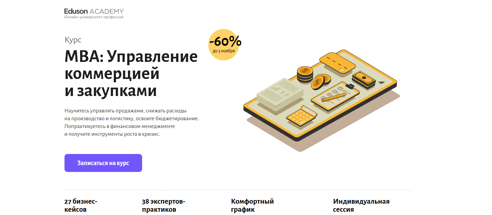
- ✅ Официальный сайт: eduson.academy
- 💸 Цена обучения: от 154 392 ₽ со скидкой 60%.
- 💳 Рассрочка: беспроцентная от 12 392 ₽/мес на 12 месяцев, возможна оплата онлайн.
- 📚 Формат: дистанционный формат — видеолекции, практические кейсы, домашние задания, тренажёры и индивидуальные сессии с экспертами.
- ⏳ Продолжительность: от 5 месяцев, темп обучения выбирает студент.
- 📜 Документ: диплом о профессиональной переподготовке государственного образца и удостоверение о повышении квалификации.
- 📝 Трудоустройство: выпускники получают помощь в развитии карьеры и применении профессиональных навыков.
- 🔷 Для кого подходит курс: топ-менеджеры, руководители отделов продаж и закупок, предприниматели и специалисты, стремящиеся повысить квалификацию и эффективность управления бизнесом.
Особенности:
Программа построена на кейсовой методике Гарвардской школы бизнеса и направлена на развитие практических навыков управления продажами и закупками. Участники изучают современные стратегии продаж, методы мотивации персонала, систему KPI и инструменты аналитики. Обучение проходит в удобном темпе на платформе дистанционного образования, что позволяет совмещать обучение с работой. После успешного прохождения обучения слушатель получает официальный документ и доступ к обновляемым материалам навсегда. Студенты проходят практические задания, участвуют в индивидуальных сессиях с экспертами и получают готовые шаблоны для внедрения эффективных методов в свой бизнес. Программа включает развитие управленческих навыков, стратегическое планирование и построение эффективных процессов продаж.
Чему учатся студенты:
- Разрабатывать стратегию продаж и выстраивать эффективную воронку продаж
- Анализировать ключевые показатели эффективности (KPI)
- Мотивировать команду и управлять отделом продаж
- Проводить аудит отделов закупок и логистики
- Разрабатывать финансовую стратегию и оценивать бизнес-проекты
- Применять современные методы управления персоналом и планирования
- Использовать практические инструменты оптимизации бизнес-процессов
Преподаватели:
- Ицхак Калдерон Адизес — основатель Института Адизеса (входит в топ-10 консалтинговых компаний мира), эксперт по эффективному управлению бизнесом.
- Яна Куренчанина — бизнес-аналитик, консультант по организационному развитию, проектировала бизнес-процессы для БКС Банка.
- Лидия Ткачева — ex-финансовый директор, квалификация ICFM, эксперт по учету и финансовому управлению.
- Ринат Мухаметвалеев — коммерческий директор сети «Перекрёсток», преподаватель стратегического менеджмента в МГИМО и ВШЭ.
- Татьяна Лукина — консультант по управлению, MBA РАНХиГС, ex-управляющий департамента продаж ТД ЦУМ.
- Роман Лашкул — руководитель GR-проектов в Ozon, ex-менеджер P&G и консультант Kearney.
- Борис Федоров — руководитель направления в Газпромбанке, эксперт по брокерскому обслуживанию.
- Евгений Кромский — преподаватель финансов, обладатель квалификаций CFA и FCCA.
Преимущества:
- Современная платформа дистанционного обучения с интерактивными кейсами
- Индивидуальный куратор и экспертная поддержка 7 дней в неделю
- Реальные бизнес-кейсы от крупных компаний России и мира
- Диплом государственного образца о профессиональной переподготовке
- Навсегда сохраняется доступ к учебным материалам и обновлениям курса
- Практические задания помогают сразу внедрить знания в работу
- Гибкий график обучения без срочных вебинаров
- Возможность вернуть 13% стоимости обучения через налоговый вычет
Отзывы учеников:
Студенты отмечают высокий уровень преподавателей и актуальность материалов. Многие пишут о практической пользе кейсов и удобстве дистанционного формата. Отдельно подчеркивают поддержку кураторов, возможность совмещать обучение с работой и реальный рост профессиональных компетенций. Средний рейтинг Академии Eduson — 4.8 из 5 по более чем 1000 отзывов.
Перейти на официальный сайт курса9. Руководитель отдела продаж – АНО ДПО «НАДПО»
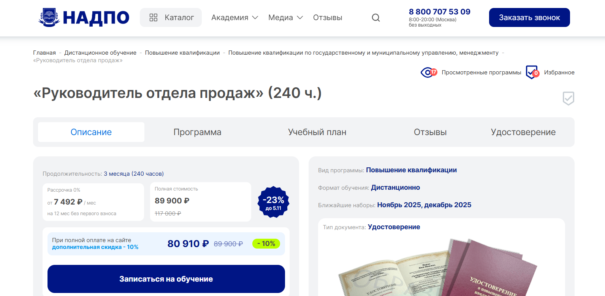
- ✅ Официальный сайт: nadpo.ru
- 💸 Цена: 89 900 ₽ (117 000 ₽ – 23%, при оплате на сайте скидка -10%, итого 80 910 ₽).
- 💳 Рассрочка: 0% на 12 месяцев по 7 492 ₽/мес без первоначального взноса, кешбэк 4495 баллов.
- 📚 Формат: дистанционное обучение с видеолекциями, домашними заданиями, тестами и доступом к библиотекам ЛитРес и Библиоклуб.
- ⏳ Продолжительность: 3 месяца (240 часов).
- 📜 Документ: после успешного прохождения обучения выдаются удостоверения о повышении квалификации, внесенные в ФИС ФРДО.
- 📝 Трудоустройство: выпускники работают в должностях руководителя отдела продаж, коммерческого директора, консультанта или проектного менеджера.
- 🔷 Для кого подходит курс: для опытных менеджеров и начинающих руководителей, желающих повысить квалификацию и развить профессиональные навыки в сфере управления продажами.
Особенности:
Программа создана для тех, кто хочет освоить эффективные стратегии продажам и методы повышения эффективности команды. Обучение проходит в дистанционном формате, что позволяет проходить обучение в удобное время и совмещать процесс обучения с работой. Слушатели осваивают практические навыки анализа воронки продаж, разработки KPI, внедрения системы мотивации менеджеров и стратегического планирования. После окончания обучения выдаются документы государственного образца. В рамках курса студенты изучают современные инструменты и методологию активных продаж, учатся выстраивать эффективную команду и управлять отделом маркетинга. Программа направлена на формирование управленческих навыков и развитие профессиональных компетенций специалистов, отвечающих за рост объемов продаж и достижение ключевых показателей эффективности.
Чему учатся студенты:
- Научиться управлять отделом продаж и выстраивать воронку продаж.
- Освоить навыки построения эффективных структур и внедрения KPI.
- Разрабатывать стратегию продажам и систему мотивации сотрудников.
- Использовать практические инструменты анализа эффективности работы.
- Применять методы повышения эффективности и оптимизации бизнес-процессов.
- Научиться выстраивать взаимодействие с отделом маркетинга и ключевыми клиентами.
Преподаватели:
- Иванова Елена Сергеевна — эксперт по управлению продажами, бизнес-тренер, разработчик программ повышения квалификации.
- Петров Дмитрий Алексеевич — практикующий консультант по внедрению CRM-систем и мотивации персонала.
- Смирнова Ольга Викторовна — коммерческий директор с опытом управления командами продаж более 15 лет.
Преимущества:
- Дистанционный формат обучения позволяет проходить курс с любым удобным графиком.
- По окончании курса выдаются удостоверения установленного образца, внесенные в государственный реестр.
- Обучение проходит на платформе дистанционного образования с поддержкой опытных преподавателей.
- Рассрочка 0% и кешбэк делают программу доступной по стоимости обучения.
- Практические задания и кейсы способствуют развитию профессиональных навыков управления.
- Освоение эффективных методов планирования и анализа показателей эффективности отдела.
- Возможность применять изученные инструменты на практике уже во время прохождения курсов.
Отзывы учеников:
Слушатели отмечают качественный дистанционный формат и доступность материалов. По отзывам, обучение помогает освоить практические навыки управления отделами продаж, мотивации менеджеров и внедрения эффективных стратегий. Многие подчеркивают, что программа помогает повысить квалификацию, увеличить эффективность работы и достичь карьерного роста. Студенты довольны удобным форматом дистанционного обучения и профессионализмом преподавателей.
Перейти на официальный сайт курса10. Руководитель отдела продаж B2B и B2C — Московский институт профессионального образования
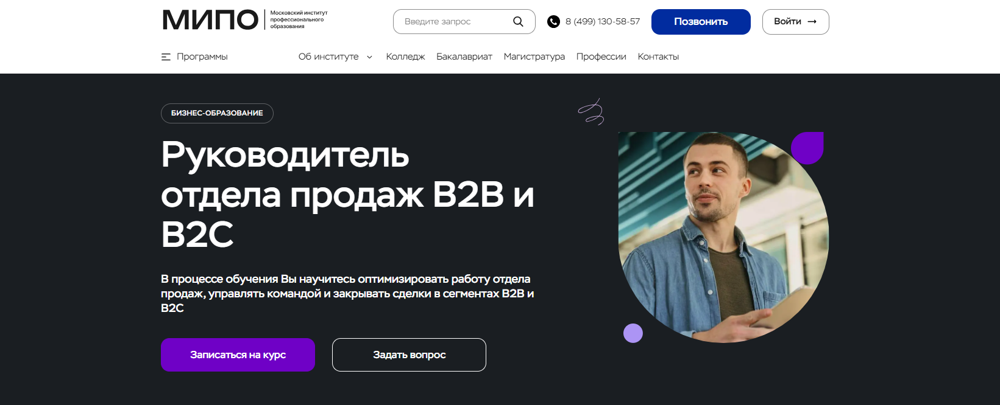
- ✅ Официальный сайт: mipo.msk.ru
- 💸 Цена обучения: указана на сайте, действует скидка 30%.
- 💳 Рассрочка: предусмотрена, условия уточняются при записи.
- 📚 Формат: дистанционный формат — онлайн-вебинары, лекции, тесты, практические задания, кейсы, сопровождение куратора.
- ⏳ Продолжительность: 9 месяцев (1260 часов).
- 📜 Документ: диплом MBA с регистрацией в Федеральном реестре ФИС-ФРДО.
- 📝 Трудоустройство: выпускники успешно повышают квалификацию, 72% переходят в более престижные компании.
- 🔷 Для кого подходит курс: владельцам бизнеса, менеджерам проектов и создателям новых направлений, стремящимся освоить навыки управления продажами и повысить эффективность работы команды.
Особенности:
Программа направлена на развитие профессиональных и управленческих навыков у руководителей отдела продаж. Студенты изучают эффективные стратегии, осваивают практические инструменты и учатся строить воронку продаж. Обучение проходит в дистанционном формате, что делает процесс прохождения обучения удобным и гибким. После успешного завершения курса выдается диплом MBA, котируемый в России и за рубежом. Программа основана на опыте опытных менеджеров и экспертов, включает реальные кейсы и современные подходы повышения квалификации. Форматы обучения адаптированы под занятых специалистов и позволяют совмещать карьеру и образование. Курс помогает научиться управлять командой, внедрять KPI и разрабатывать стратегию продажам, повышая эффективность бизнеса.
Чему учатся студенты:
- Научиться управлять отделом продаж в сегментах B2B и B2C
- Выстраивать воронку продаж и определять ключевые показатели эффективности
- Освоить навыки управления персоналом и мотивации сотрудников
- Разрабатывать стратегию продажам и внедрять эффективные методы работы
- Изучить CRM-системы и освоить инструменты аналитики
- Научиться планировать, анализировать результаты и повышать эффективность процессов
- Формировать эффективную команду и распределять зоны ответственности
Преподаватели:
- Дмитрий Коноплянский — руководитель отдела продаж B2B и B2C, основатель сети ювелирных салонов, советник компаний «НЛМК» и «Роснефть».
- Сергей Ряковский — эксперт по стратегическому менеджменту, автор методик по управлению персоналом.
- Траншье Янник — эксперт в области инновационного менеджмента и технологического брокерства.
- Татьяна Баранова — эксперт по деловому этикету, основатель проекта «Про ЭТИКЕТ».
- Александр Борисов — специалист по бизнес-планированию и финансовому анализу.
- Александр Додерер — глава агентства стратегических коммуникаций GRUPPE DREI.
Преимущества:
- Дистанционное обучение с возможностью совмещать работу и учебу
- Официальный диплом MBA, вносимый в реестр ФИС-ФРДО
- Программа включает практические кейсы и современные инструменты анализа
- Сопровождение куратора и обратная связь от преподавателей
- Форматы обучения адаптированы под любой график
- Освоение методик построения эффективных отделов продаж
- Возможность повысить квалификацию и управленческую компетенцию
- Обучение проводят опытные руководители и международные эксперты
Отзывы учеников:
Выпускники отмечают удобный дистанционный формат, качественные учебные материалы и постоянную поддержку кураторов. Многие студенты подчеркивают, что курс помог освоить практические навыки и повысить профессиональную эффективность. После прохождения обучения участники отмечают рост карьерных возможностей и улучшение результатов в работе с клиентами и командой.
Перейти на официальный сайт курса11. Руководитель отдела продаж: эффективные продажи — Skillbox
- ✅ Официальный сайт: skillbox.ru
- 💸 Цена: от 76 992 ₽ (со скидкой до 60%).
- 💳 Рассрочка: от 3 208 ₽/мес до 24 месяцев, доступна беспроцентная оплата.
- 📚 Формат: дистанционный формат — видеолекции, реальные кейсы, практические задания, консультации с экспертами и тесты.
- ⏳ Продолжительность: 6 месяцев (357 часов теории и 307 часов практики).
- 📜 Документ: по успешном прохождении обучения выдается диплом о профессиональной переподготовке.
- 📝 Трудоустройство: действует программа «Поможем найти работу или вернем деньги».
- 🔷 Для кого подходит курс: для менеджеров по продажам, руководителей отделов, специалистов, стремящихся повысить квалификацию и научиться управлять эффективной командой.
Особенности:
Программа создана для тех, кто хочет освоить современные методы управления продажами и выстраивать эффективную стратегию продажам. Курс сочетает теорию и практику с обратной связью от опытных руководителей отдела. Слушатели изучат, как строить воронку продаж, анализировать ключевые показатели и внедрять эффективные стратегии для роста прибыли. Форматы обучения позволяют совмещать учебу с работой благодаря удобным графикам и дистанционному формату. По окончании курса участники смогут разрабатывать систему мотивации сотрудников, планировать продажи и управлять показателями эффективности. Обучение проходит на платформе дистанционного образования с постоянным доступом к материалам. Выпускники получают официальный диплом установленного образца и могут применить практические навыки уже во время обучения.
Чему учатся студенты:
- Разрабатывать стратегию продаж и выстраивать воронку продаж;
- Анализировать эффективность работы отдела и управлять командой;
- Создавать систему мотивации менеджеров и внедрять KPI;
- Оптимизировать бизнес-процессы и планировать объемы продаж;
- Научиться разрабатывать стандарты продаж и управлять ключевыми клиентами;
- Использовать современные инструменты аналитики и CRM-системы;
- Внедрять стратегии развития и повышать эффективность отдела продаж.
Преподаватели:
- Вадим Дозорцев — эксперт в управлении продажами, преподаватель ВШЭ и «Сколково», опыт предпринимательства более 30 лет, руководил компаниями с оборотом до 20 млн $.
- Андрей Кулинич — преподаватель MBA/EMBA, бизнес-школа «Мирбис» и университет «Иннополис».
- Стас Гуревский — основатель агентства бизнес-презентаций Graf Media.
- Инна Можайская — генеральный директор компании «Можайская Executive».
- Татьяна Кроткова — основатель Active Sales Group, консультант по продажам.
- Полина Бынова — директор по маркетингу Ridero.ru.
- Артем Облинов — основатель онлайн-университета «Время первых».
- Елизавета Радюк — Senior CRM-маркетолог Out of Cloud.
Преимущества:
- 50% курса — практика с обратной связью от опытных РОПов;
- Доступ к материалам и обновлениям навсегда;
- Персональное сопровождение ментора и индивидуальные консультации;
- Возможность совмещать обучение с работой;
- Сертификат государственного образца по окончании курса;
- Применение знаний уже после первого модуля;
- Постоянная поддержка экспертов и быстрая обратная связь;
- Участие в ежемесячных онлайн-разборах кейсов с Вадимом Дозорцевым.
Отзывы учеников:
Студенты Skillbox отмечают высокий уровень преподавателей и удобный дистанционный формат обучения. Среди плюсов чаще всего упоминаются: большое количество практических заданий, поддержка менторов, возможность применять знания сразу на работе и доступ к материалам даже после окончания курса. 93% выпускников утверждают, что курс помог повысить квалификацию и увеличить эффективность работы отдела продаж.
Перейти на официальный сайт курса12. Руководитель отдела продаж — Яндекс Практикум
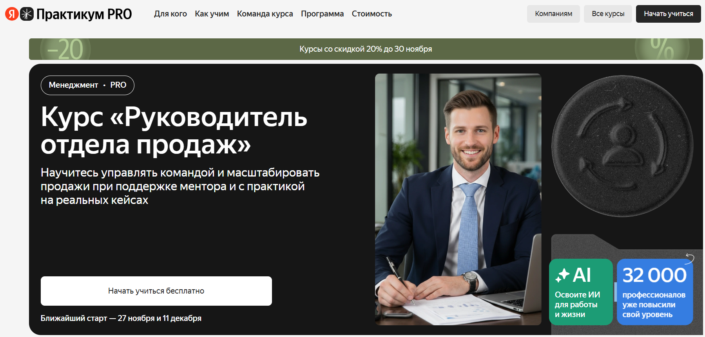
- ✅ Официальный сайт: practicum.yandex.ru
- 💸 Цена: от 78 400 ₽ курсы со скидкой 20%.
- 💳 Рассрочка: доступна с беспроцентными ежемесячными платежами - от 3 200 ₽/мес.
- 📚 Формат: дистанционный формат обучения, онлайн-видеоуроки, тесты, практические задания, встречи с менторами из Яндекса и Циана.
- ⏳ Продолжительность: обучение проходит по гибкому графику
- 📜 Документ: по окончании обучения выдаются диплом о повышении квалификации.
- 📝 Трудоустройство: курс направлен на повышение квалификации и развитие управленческих компетенций для карьерного роста.
- 🔷 Для кого подходит курс: для менеджеров по продажам, руководителей отделов и владельцев бизнеса, стремящихся повысить эффективность и освоить профессиональные навыки управления.
Особенности:
Программа разработана для тех, кто хочет научиться управлять эффективной командой и повысить квалификацию в сфере менеджмента. Обучение проходит в дистанционном формате с использованием современных образовательных технологий. Слушатели изучают эффективные стратегии, осваивают практические навыки построения воронки продаж и стратегию продажам. В программу включены реальные кейсы, тесты, работа с аналитикой и практика на основе B2B- и B2C-проектов. Менторы с опытом более 7 лет помогают применять полученные знания в работе. После прохождения обучения выдается официальный диплом, подтверждающий повышение квалификации. Удобный формат занятий позволяет совмещать обучение с работой и личными делами.
Чему учатся студенты:
- Научиться управлять командой и мотивировать сотрудников
- Выстраивать воронку продаж и контролировать показатели эффективности
- Разрабатывать стратегию продажам и внедрять современные инструменты аналитики
- Освоить методы повышения эффективности и построения эффективных систем
- Использовать ИИ и цифровые инструменты для оптимизации бизнес-процессов
- Проводить обучение и адаптацию новых сотрудников в отделах продаж
Преподаватели:
- Сергей Антипкин — директор по развитию бизнеса в Анабаре, экс-директор по продажам в Циане, опыт 12+ лет, сертифицированный коуч ICI.
- Анита Краснова — руководитель службы продаж в Яндекс Директе, опыт управления командой более 5 лет.
- Саркис Ирицян — руководитель отдела продаж в Циане, предприниматель, опыт 12+ лет в активных продажах.
- Анна Штенгауэр — HRD в Ubic.tech, экс-HRBP в Циане, формировала отделы продаж численностью 100+ человек.
- Арменак Кочарян — коммерческий директор компании «Третье Чувство», тренер по психологии продаж, опыт 9+ лет.
- Кирилл Мальцев — руководитель продаж в Merk Team, более 15 лет в управлении продажами.
- Мария Кирсанова — руководитель по развитию бизнеса в BrainingGroup, эксперт с опытом 13+ лет.
- Татьяна Разумовская — эксперт с 17-летним опытом в B2B-продажах, бывший руководитель по работе с партнерами в Samsung.
Преимущества:
- Дистанционный формат обучения с удобным графиком
- 75% курса — практика на реальных кейсах
- 4 менторские встречи с экспертами из Яндекса и Циана
- Тестирование в начале и по окончании обучения для оценки прогресса
- Возможность повысить квалификацию и развить управленческие навыки
- Система мотивации и нетворкинг с опытными руководителями
- Доступ к платформе дистанционного образования с современными инструментами
- По успешном прохождении обучения выдаются диплом о повышении квалификации
Отзывы учеников:
Выпускники отмечают, что курс помог систематизировать знания и освоить эффективные стратегии продаж. По словам студентов, обучение позволило выстроить воронку продаж, повысить мотивацию команды и увеличить эффективность работы отдела. Руководители отмечают практическую пользу занятий, участие опытных преподавателей и возможность применять инструменты на реальных проектах.
Перейти на официальный сайт курса13. Руководитель отдела продаж — школа Бруноям
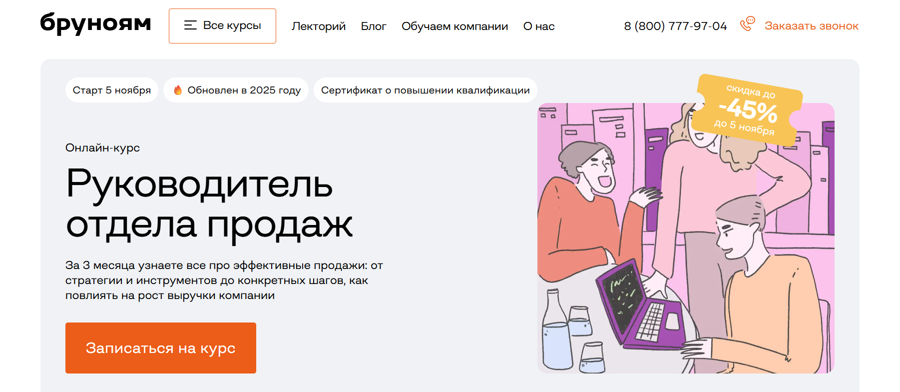
- ✅ Официальный сайт: brunoyam.com
- 💸 Цена: от 59 892 ₽ со скидкой до 45%.
- 💳 Рассрочка: доступна от 4 991 ₽/мес до 12 месяцев без переплат через Сбер и Т-Банк.
- 📚 Формат: дистанционный формат — вебинары, видеоуроки, практические задания, кейсы и разборы ситуаций, поддержка наставников в Telegram-чате.
- ⏳ Продолжительность: 3 месяца.
- 📜 Документ: сертификат о повышении квалификации, который выдается после успешного прохождения обучения.
- 📝 Трудоустройство: карьерная консультация, помощь в составлении резюме и портфолио, доступ к вакансиям и стажировкам партнеров.
- 🔷 Для кого подходит курс: для менеджеров по продажам, начинающих руководителей и специалистов, стремящихся повысить квалификацию и освоить профессиональные навыки управления отделом.
Особенности:
Курс разработан для тех, кто хочет научиться управлять отделом продаж и выстраивать воронку продаж с применением эффективных стратегий. Программа объединяет обучение современным инструментам продаж, мотивации менеджеров и методам повышения эффективности. Обучение проходит в дистанционном формате с удобным графиком и доступом к платформе дистанционного образования. По окончании курса слушатель получает документ, подтверждающий повышение квалификации. После успешного прохождения курсов участники смогут освоить навыки разработки стратегии, управления командой и внедрения стратегии продажам для увеличения выручки. Программа включает практические инструменты и реальные кейсы от опытных менеджеров и преподавателей-практиков.
Чему учатся студенты:
- Освоят навыки построения воронки продаж и стратегического планирования
- Научатся управлять отделом и формировать эффективную команду
- Изучат методы повышения эффективности и мотивации персонала
- Получат практические навыки внедрения стратегии продажам
- Изучат современные методы анализа ключевых показателей
- Научатся управлять показателями эффективности и ростом выручки
Преподаватели:
- Михаил Торгашев — опытный преподаватель, эксперт в сфере продаж и управления командами с практикой более 3 лет.
Преимущества:
- 80% обучения занимает практика и реальные кейсы
- Современные дистанционные образовательные технологии
- Помощь в трудоустройстве после окончания курса
- Возможность повысить квалификацию и получить сертификат
- Удобный формат обучения и поддержка наставников
- Применение практических инструментов для роста эффективности
- Обновленная программа 2025 года с актуальными методами продаж
- Налоговый вычет 13% и гарантия возврата оплаты в течение первых занятий
Отзывы учеников:
Выпускники отмечают, что обучение помогает повысить профессиональный уровень, освоить эффективные методы продаж и мотивации сотрудников. Большинство студентов подчеркивают практическую пользу курса, современный подход к обучению и возможность совмещать обучение с работой. Положительно оценивают поддержку преподавателей и карьерный рост после прохождения программы.
Перейти на официальный сайт курса14. Руководитель отдела продаж — Нетология
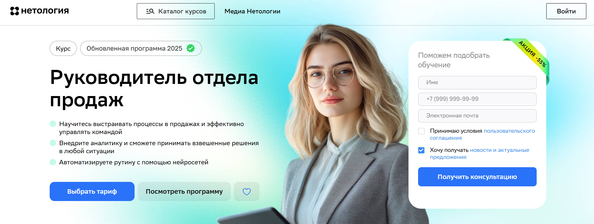
- ✅ Официальный сайт: netology.ru
- 💸 Цена: от 68 600 ₽ до 84 000 ₽ с учётом акции -55% .
- 💳 Рассрочка: до 24 месяцев без переплат, от 3 009 ₽ в месяц.
- 📚 Формат: дистанционный формат — видеолекции, воркшопы, практические задания, консультации и проверка домашних работ.
- ⏳ Продолжительность: 6 месяцев или в собственном темпе.
- 📜 Документ: обучение выдается диплом о профессиональной переподготовке установленного образца.
- 📝 Трудоустройство: помогает повысить квалификацию и эффективность работы, способствует карьерному росту.
- 🔷 Для кого подходит курс: для руководителях отдела продаж, тимлидов, предпринимателей и специалистов, стремящихся повысить профессиональных навыков и управлять эффективную команду.
Особенности:
Программа направлена на освоение практических навыков управления продажами и мотивация менеджеров. Студенты научатся выстраивать воронку продаж, управлять отделом и анализировать ключевые показатели эффективности. Обучение проходит на платформу дистанционного образования Нетологии с удобным форматом занятий. После успешного прохождения обучения выдаются дипломы, подтверждающие профессиональных компетенций. Курсы повышения квалификации включают практических инструментов для внедрения стратегии и автоматизации процессов. Такой подход позволяет повысить эффективность команды и внедрять нейросети для оптимизация бизнес-процессов. В дистанционном обучении можно совмещать прохождение курсов с основной работой и применять знания сразу на практике.
Чему учатся студенты:
- Научиться управлять отделом и выстраивать эффективных систем продаж
- Анализировать показатели эффективности и применять методы повышения результатов
- Разрабатывать стратегию продажам и выстраивать воронку продаж
- Внедрять KPI и системы мотивация персонала
- Изучить современные подходы к работе с B2B и B2C-клиентами
- Использовать инструменты аналитики и цифровых технологий
- Оптимизация бизнес-процессов и повышение квалификации сотрудников
Преподаватели:
- Сергей Кабанов — консультант по стратегии и корпоративной культуре, 20+ лет опыта, увеличил продажи в Miele и GSK.
- Георгий Кичев — управляющий партнёр ROCKET.red, внедрил CRM-системы для Сбера, Додо Пиццы и ВкусВилла.
- Владислав Белоусов — директор по развитию Innovator Cosmetics.
- Елена Орлина — основатель и руководитель компании Proseller.
- Надежда Федосова — директор по продажам и поддержке Фоксфорда, владелец Nordic Agency AB.
Преимущества:
- Дистанционные образовательные форматы с доступом из любой точки
- После прохождения обучения выдаются дипломы государственного образца
- Реальные кейсы и практика на собственных проектах
- Возможность освоить навыки управления отделом и выстраивать современные процессы
- Опытные менеджеры и преподаватели с успешными кейсами
- Гибкий график обучения и возможность совмещать обучение с работой
- Методология продаж и внедрение стратегии развития команды
- Развитие профессиональных компетенций и повышение квалификации специалистов
Отзывы учеников:
Студенты отмечают, что курс помогает научиться выстраивать воронку продаж, внедрять KPI и мотивировать сотрудников. Часто подчеркивают практическую направленность, доступный формат дистанционного обучения и поддержку преподавателей. По отзывам, программа помогает повысить квалификацию и увеличить эффективность отдела продаж уже во время обучения.
Перейти на официальный сайт курса15. Руководитель отдела продаж — Русская Школа Управления
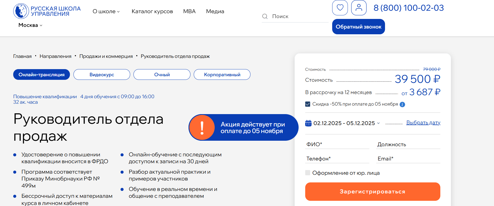
- ✅ Официальный сайт: uprav.ru
- 💸 Цена: от 39 500 ₽ до 79 000 ₽ в зависимости от формата обучения.
- 💳 Рассрочка: доступна от 3 687 ₽/мес до 12 месяцев без переплат.
- 📚 Формат: очный, онлайн-трансляция и видеокурс; обучение проходит в дистанционном формате с доступом к материалам, практическими заданиями и консультациями преподавателей.
- ⏳ Продолжительность: 32 академических часа, 4 дня обучения (с 09:00 до 16:00).
- 📜 Документ: удостоверение о повышении квалификации государственного образца, информация вносится в ФРДО.
- 📝 Трудоустройство: выпускники повышают квалификацию и получают востребованные компетенции для карьерного роста.
- 🔷 Для кого подходит курс: для действующих руководителей отдела продаж, специалистов по продажам и коммерческих директоров, желающих повысить эффективность команды и выстроить системную стратегию продаж.
Особенности:
Курс направлен на развитие управленческих и практических навыков в сфере активных продаж. Студенты научатся анализировать бизнес-процессы, выстраивать воронку продаж и внедрять эффективные стратегии для повышения эффективности отдела. Обучение проходит на платформе дистанционного образования с возможностью задать вопросы преподавателю в реальном времени. После прохождения курса выдается удостоверение о повышении квалификации, которое подтверждает профессиональные навыки слушателя. Программа включает реальные кейсы, разработку системы мотивации сотрудников и работу с ключевыми показателями эффективности. Обучение проходит под руководством опытных менеджеров и экспертов b2b-продаж, а по окончании слушатели получают бессрочный доступ к учебным материалам.
Чему учатся студенты:
- Научиться управлять отделом продаж и разрабатывать стратегию продажам компании
- Проводить аудит работы команды и оптимизировать бизнес-процессы
- Применять эффективные методы мотивации персонала и разрабатывать систему оплаты труда
- Внедрять CRM-системы и управлять клиентской базой
- Освоить навыки стратегического планирования и управления показателями эффективности
Преподаватели:
- Васильева Елена Анатольевна — бизнес-консультант, психолог, специалист по организационному развитию, эксперт в области управленческих технологий.
- Горбачев Максим Николаевич — эксперт по b2b-продажам, совладелец IT-сервиса для автоматизации продаж, реализовал 107 проектов с ростом эффективности от 4% до 325%.
Преимущества:
- Обучение проходит в дистанционном формате с возможностью выбора удобного графика
- 70% программы составляет практическая работа с реальными кейсами
- Участники получают бессрочный доступ к обновляемым материалам курса
- Преподаватели — действующие специалисты ведущих компаний
- После успешного прохождения обучения выдаются удостоверения государственного образца
- Возможность внедрения полученных знаний для роста эффективности команды и бизнеса
- Поддержка преподавателей и персональная обратная связь во время занятий
Отзывы учеников:
Слушатели Русской Школы Управления отмечают практическую направленность программы, высокий уровень преподавателей и удобный дистанционный формат обучения. Многие подчеркивают, что курс помог повысить эффективность отдела продаж, внедрить CRM и разработать систему мотивации сотрудников. Отдельно выделяют профессионализм преподавателей и полезность реальных кейсов.
Перейти на официальный сайт курса16. Директор по продажам — Учебный центр «НЦПО»
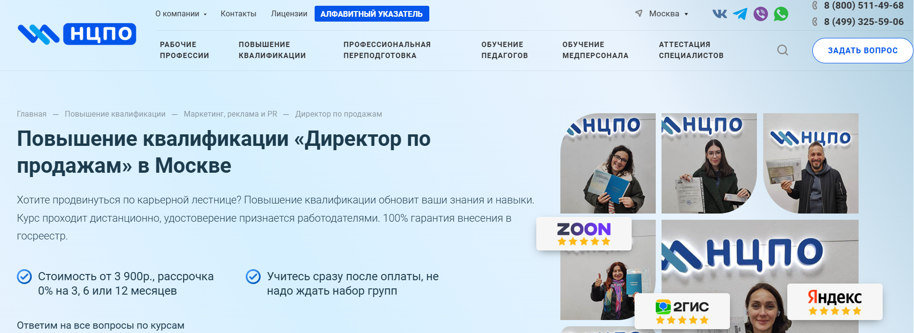
- ✅ Официальный сайт: ncpo.ru
- 💸 Цена обучения: от 3 900 ₽ (скидка 1 850 ₽ при оплате в день заказа).
- 💳 Рассрочка: 0% на 3, 6 или 12 месяцев от 325 ₽/мес.
- 📚 Формат: дистанционный формат обучения — видеолекции, тесты, методические материалы, доступ к онлайн-платформе 24/7.
- ⏳ Продолжительность: от 36 до 144 академических часов.
- 📜 Документ: удостоверение о повышении квалификации государственного образца с внесением в реестр ФРДО.
- 📝 Трудоустройство: помогает повысить квалификацию и получить допуск к руководящим должностям.
- 🔷 Для кого подходит курс: для коммерческих директоров, руководителей отделов продаж, менеджеров по продажам и специалистов, стремящихся развить управленческие компетенции.
Особенности:
Программа направлена на развитие управленческих и профессиональных навыков руководителей отдела продаж. Студенты изучат эффективные стратегии и методы повышения эффективности команды, научатся управлять отделом маркетинга и выстраивать воронку продаж. Курс реализуется в дистанционном обучении, что удобно для работающих специалистов. После прохождения обучения слушатель получает официальный документ, который принимается работодателями по всей России. Программа помогает освоить современные инструменты и практические навыки, нужные для внедрения стратегии продажам и построения эффективных бизнес-процессов. Удобный формат позволяет совмещать учебу с работой без отрыва от основной деятельности.
Чему учатся студенты:
- Разрабатывать стратегию продажам и управлять показателями эффективности;
- Выстраивать эффективную команду и внедрять систему мотивации сотрудников;
- Использовать практические инструменты анализа ключевых показателей (KPI);
- Научиться управлять отделом продаж и оптимизировать бизнес-процессы;
- Применять современные методики прогнозирования продаж и построения воронки продаж.
Преподаватели:
- Терешков Александр Леонидович — генеральный директор УЦ «НЦПО», эксперт в области управления продажами.
- Грезнева Диана — преподаватель с опытом работы в коммерческом менеджменте и управлении персоналом.
- Малкова Анна — специалист по стратегическому маркетингу и построению эффективных команд.
Преимущества:
- Дистанционный формат обучения с доступом к платформе 24/7;
- Официальное удостоверение с регистрацией в ФРДО;
- Оплата в рассрочку без процентов;
- Практическая направленность — реальные кейсы и методика разработки стандартов продаж;
- Гарантированное принятие документов работодателями;
- Поддержка опытных менеджеров и кураторов курса;
- Возможность начать обучение сразу после оплаты.
Отзывы учеников:
Студенты отмечают качественную подачу материала, удобный дистанционный формат и профессионализм преподавателей. Многие выпускники подчеркивают, что обучение помогло им повысить квалификацию, освоить новые инструменты и увеличить эффективность отдела продаж. Высокие оценки на Яндекс (5.0) и Google (4.9) подтверждают доверие слушателей.
Перейти на официальный сайт курса17. Руководитель отдела продаж — Академия профессионального образования «АПОК»
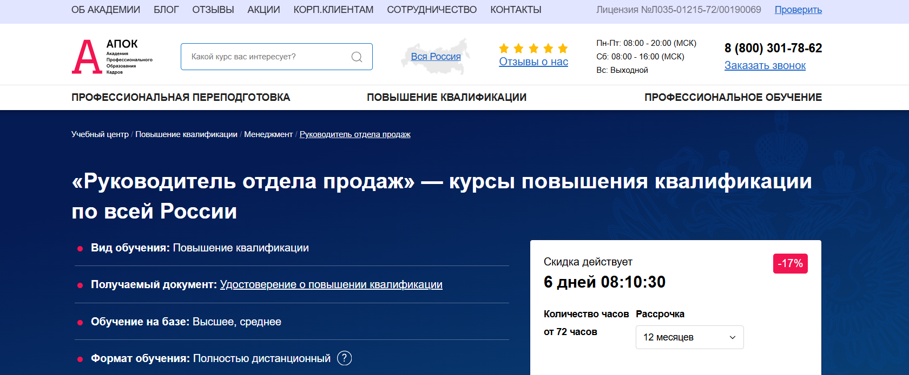
- ✅ Официальный сайт: apokdpo.ru
- 💸 Цена: от 15 600 ₽ со скидкой 17%.
- 💳 Рассрочка: до 12 месяцев, от 1 300 ₽ в месяц, без переплат.
- 📚 Формат: дистанционный формат — видеолекции, тесты, практические задания и консультации с преподавателями.
- ⏳ Продолжительность: от 144 часов (от 3 недель).
- 📜 Документ: удостоверение о повышении квалификации, регистрируется в ФИС ФРДО.
- 📝 Трудоустройство: помощь в повышении квалификации и согласовании обучения с работодателем.
- 🔷 Для кого подходит курс: для специалистов и руководителей отдела продаж, желающих освоить эффективные стратегии и развить профессиональные навыки.
Особенности:
Программа создана для руководителей, стремящихся повысить эффективность команды и научиться управлять отделом продаж с использованием современных инструментов. В процессе дистанционного обучения слушатели изучат методологию активных продаж, освоят навыки стратегического планирования и построения воронки продаж. Обучение проходит в удобном формате с доступом к учебным материалам на платформе дистанционного образования. После успешного прохождения курсов обучения выдаются дипломы государственного образца, подтверждающие уровень профессиональных компетенций. Программа направлена на развитие практических навыков управления, внедрение стратегии продажам и мотивацию сотрудников. Такой подход помогает управлять отделом, внедрять KPI и выстраивать эффективную команду.
Чему учатся студенты:
- Освоят навыки построения воронки продаж и внедрения стратегии продажам;
- Научатся управлять отделом и повышать эффективность работы команды;
- Изучат методы анализа ключевых показателей и профессиональных стандартов;
- Приобретут практических инструментов для оценки эффективности и планирования;
- Разработают систему мотивации менеджеров и стратегии роста показателей продаж;
- Смогут научиться выстраивать коммуникацию с клиентами и управлять показателями эффективности.
Преподаватели:
- Опытные менеджеры и коммерческие директора с многолетней практикой управления отделами продаж.
- Преподаватели, специализирующиеся на внедрении стратегии, оптимизации бизнес-процессов и повышении эффективности персонала.
Преимущества:
- Дистанционное обучение без отрыва от работы с доступом к онлайн-платформе;
- После успешного прохождения обучения выдается удостоверение государственного образца;
- Рассрочка 0% сроком до 12 месяцев без дополнительных платежей;
- Возможность пройти курс с частичной оплатой от работодателя;
- Регистрация всех документов в ФИС ФРДО и бесплатная доставка по России;
- Современные форматы обучения с реальными кейсами и практическими заданиями;
- Программа направлена на развитие управленческих навыков и эффективных методов продаж.
Отзывы учеников:
Слушатели курса отмечают понятную структуру и удобный дистанционный формат обучения. Многие подчеркивают, что обучение помогло повысить квалификацию, освоить эффективные методы управления отделом и разработку стратегии продажам. Отмечают высокий уровень преподавателей, практическую направленность и возможность совмещать обучение с работой.
Перейти на официальный сайт курса18. Руководитель отдела продаж — Учебный центр дополнительного профессионального образования «ЭКОДПО»
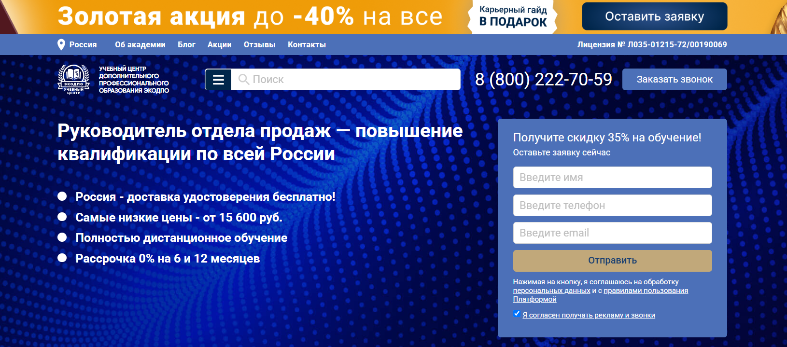
- ✅ Официальный сайт: ecodpo.ru
- 💸 Цена обучения: от 15 600 ₽ (скидка до 35%).
- 💳 Рассрочка: 0% на 6 или 12 месяцев от 1 300 ₽/мес.
- 📚 Формат: дистанционный формат, свободный график, видеолекции, тесты и домашние задания.
- ⏳ Продолжительность: от 72 часов (примерно 2 недели).
- 📜 Документ: удостоверение о повышении квалификации установленного образца, сведения вносятся в ФИС ФРДО.
- 📝 Трудоустройство: выпускники могут работать в частных и государственных организациях, интернет-магазинах и торговых предприятиях.
- 🔷 Для кого подходит курс: для действующих и начинающих руководителей отделов продаж, менеджеров, желающих повысить квалификацию и управленческие компетенции.
Особенности:
Программа разработана по требованиям ФЗ №273 «Об образовании в РФ» и позволяет получить новые профессиональные навыки дистанционно без отрыва от работы. Удобный формат обучения помогает совмещать обучение с текущими задачами и использовать современные инструменты менеджмента. Студенты освоят эффективные стратегии управления отделом, научатся мотивировать сотрудников и выстраивать воронку продаж. Обучение проходит на платформе дистанционного образования «ЭКОДПО», где предоставлен бесплатный доступ к учебным материалам 24/7. После прохождения обучения выдаются дипломы установленного образца, а документы доставляются бесплатно по всей России. Курс помогает повысить эффективность руководителей отдела и подготовиться к карьерному росту.
Чему учатся студенты:
- Изучают методы управления отделом продаж и мотивации персонала
- Осваивают практические инструменты анализа и прогнозирования продаж
- Учaтся выстраивать эффективную команду и стратегию продажам
- Разрабатывают стандарты продаж и систему мотивации менеджеров
- Применяют ИТ-технологии и CRM-системы для управления показателями эффективности
- Научаются планировать и анализировать воронку продаж для повышения результатов
Преподаватели:
- Обучение проводят опытные преподаватели и методисты центра «ЭКОДПО» с практическим опытом руководства отделами продаж и маркетинга.
Преимущества:
- Полностью дистанционное обучение с гибким графиком
- Бесплатная доставка удостоверения по всей России
- Неограниченное количество пересдач итогового тестирования
- Персональный подход и разработка индивидуального плана обучения
- Возможность начать обучение без ожидания набора группы
- Официальный документ, внесённый в ФИС ФРДО
- Поддержка кураторов на всех этапах прохождения курсов
Отзывы учеников:
Выпускники отмечают простоту дистанционного формата, понятную структуру обучения и качественные материалы. Многие выделяют возможность учиться в удобное время и похвалили оперативную доставку удостоверений. Студенты подчеркивают, что программа помогает научиться управлять отделом продаж и внедрять эффективные методы мотивации команды на практике.
Перейти на официальный сайт курса19. Тренинг для руководителей отдела продаж — Outstaffing Company
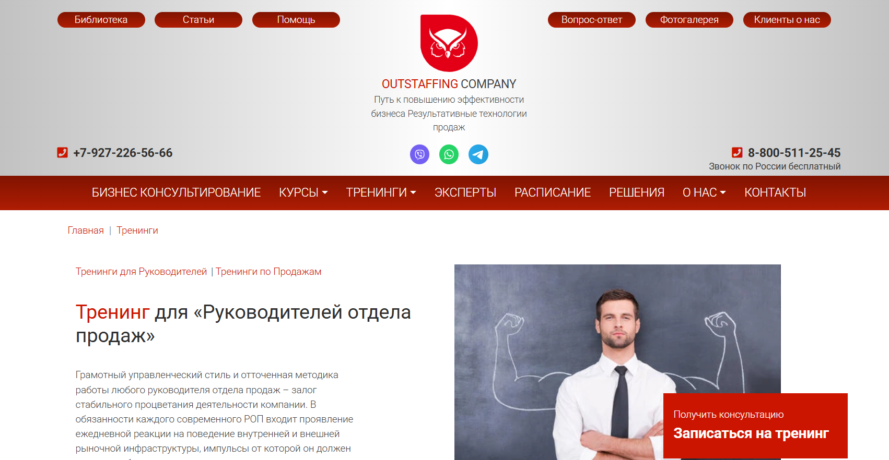
- ✅ Официальный сайт: con-centr.ru
- 💸 Цена обучения: по запросу на сайте компании, от 28 000 ₽.
- 💳 Рассрочка: предоставляется индивидуально по договоренности.
- 📚 Формат: очные и дистанционные занятия, мини-лекции, тесты, практические кейсы и обратная связь от тренера.
- ⏳ Продолжительность: определяется программой — от 1 до 3 недель.
- 📜 Документ: по окончании обучения выдаются диплом или сертификат о повышении квалификации.
- 📝 Трудоустройство: помогает повысить квалификацию и профессиональные компетенции для карьерного роста в сфере управления продажами.
- 🔷 Для кого подходит курс: для руководителей отделов продаж, филиалов, супервайзеров, старших менеджеров и управляющих коммерческими подразделениями.
Особенности:
Программа обучения разработана для руководителей, желающих освоить современные инструменты управления отделом продаж и научиться выстраивать эффективную команду. Курс помогает изучить стратегии продаж, разработку системы мотивации сотрудников и внедрение KPI. В процессе прохождения обучения участники осваивают практические навыки анализа и планирования, учатся управлять показателями эффективности и выстраивать воронку продаж. Обучение проходит в дистанционном формате с элементами реальных кейсов, что позволяет совмещать учебу с работой. По успешном завершении курса слушатели получают диплом установленного образца. Программа Outstaffing Company помогает повысить эффективность бизнес-процессов и укрепить управленческие навыки руководителей отдела продаж.
Чему учатся студенты:
- Научиться управлять отделом продаж и выстраивать эффективные процессы
- Освоить методы повышения эффективности работы команды
- Изучить стратегию продажам и способы увеличения объемов продаж
- Разработать и внедрять систему мотивации персонала
- Понимать и анализировать ключевые показатели эффективности (KPI)
- Применять современные методики управления и планирования
Преподаватели:
- Тренеры Outstaffing Company — эксперты с опытом работы в управлении продажами и коммерческом консалтинге
- Преподаватели-практики, проводящие обучение с реальными кейсами из бизнеса
Преимущества:
- Обучение проводят опытные тренеры с практикой в сфере управления продажами
- Программа адаптируется под задачи конкретной компании
- Можно проходить обучение в дистанционном формате без отрыва от работы
- Получение практических инструментов и методик управления командой
- Выдача официального диплома или сертификата о повышении квалификации
- Гарантированный рост профессиональных навыков и управленческих компетенций
- Фокус на практические результаты и повышение эффективности работы отдела продаж
Отзывы учеников:
Слушатели отмечают высокий уровень преподавания и практическую направленность курса. Среди плюсов — удобный формат обучения, полезные кейсы и возможность сразу применять полученные знания в работе. Руководители подчеркивают, что после прохождения курса смогли повысить эффективность команды и внедрить новые методы мотивации сотрудников.
Перейти на официальный сайт курсаБесплатные курсы по обучению на Директора по продажам
Профессия «Руководитель отдела продаж», бесплатно – Eduson Academy
✅ Официальный сайт: free.eduson.academyОписание и особенности:
- Участники узнают, как выстраивать процессы и создавать эффективную воронку продаж под разные типы бизнеса.
- Курс помогает научиться управлять отделом продаж, мотивировать команду и повышать её результативность с помощью KPI.
- В процессе обучения студенты освоят практические навыки внедрения стратегии продажам и работы с CRM-системами.
- Программа разработана под руководством Елены Масоловой — основателя Groupon Russia и эксперта в построении эффективных команд.
- Слушатели изучат эффективные стратегии, методы анализа и инструменты для управления показателями эффективности.
- В демо-версии курса доступны лекции и тренажёры по работе с AmoCRM и Битрикс24 для освоения современных инструментов продаж.
- Дистанционный формат позволяет проходить обучение в удобном темпе и совмещать его с работой.
- По завершении обучения участники смогут повысить квалификацию, внедрять стратегии развития и выстраивать эффективную команду.
- Курс подходит как для начинающих руководителей отдела, так и для опытных менеджеров, желающих увеличить эффективность бизнеса.
- Доступ к программе предоставляется бесплатно на 3 дня с возможностью изучить материалы и оценить формат обучения.
Эффективные стратегии мотивации менеджеров – Stepik
✅ Официальный сайт: stepik.orgОписание и особенности:
- Программа помогает руководителям отдела продаж изучить эффективные стратегии мотивации менеджеров и освоить современные методы управления командой.
- Обучение проходит в дистанционном формате с удобным графиком и доступом к учебным материалам онлайн.
- Участники научатся выстраивать воронку продаж, повышать эффективность сотрудников и управлять отделом маркетинга.
- Курс направлен на развитие профессиональных и практических навыков для роста квалификации руководителей.
- Слушатели освоят практические инструменты для построения эффективных систем мотивации и внедрения стратегии продаж.
- Программа включает реальные кейсы, методику разработки стандартов продаж и анализ показателей эффективности.
- После успешного прохождения обучения выдается диплом установленного образца о повышении квалификации.
- Форматы обучения позволяют совмещать процесс обучения с работой и изучать материалы в любом удобном темпе.
- Опытные преподаватели делятся практическим опытом, помогают освоить навыки планирования и внедрения KPI в работу команды.
- По окончании курса участники смогут повысить квалификацию и применять эффективные методы управления в сфере продаж.
Кто такой директор по продажам?
Директор по продажам — это руководитель, отвечающий за организацию, развитие и контроль продаж компании. Он определяет стратегию сбыта, выстраивает процессы взаимодействия с клиентами, анализирует эффективность отдела продаж и отвечает за достижение финансовых целей бизнеса. Это одна из ключевых управленческих позиций, напрямую влияющая на прибыль организации.
Что делает руководители отдела продаж и чем занимается?
Работа директора по продажам охватывает широкий круг обязанностей — от стратегического планирования до мотивации команды. Он не просто следит за выполнением планов, а выстраивает систему, которая обеспечивает стабильный рост продаж.
- Разрабатывает стратегию продаж и систему KPI.
- Проводит анализ рынка, конкурентов и целевой аудитории.
- Формирует и развивает команду менеджеров по продажам.
- Контролирует выполнение планов и бюджетов.
- Участвует в переговорах с ключевыми клиентами и партнёрами.
- Внедряет CRM-системы и современные инструменты аналитики.
- Отвечает за обучение персонала и внедрение стандартов обслуживания клиентов.
Фактически, директор по продажам — это человек, который превращает стратегические цели компании в реальные финансовые результаты.
Что должен знать и уметь РОП?
Чтобы успешно управлять продажами, руководителю нужно обладать не только аналитическим складом ума, но и развитыми коммуникативными навыками. Ниже представлены ключевые компетенции:
- Знание рынка и отрасли — понимание поведения покупателей, тенденций и конкурентов.
- Навыки стратегического планирования — умение ставить цели и формировать долгосрочные планы продаж.
- Опыт управления персоналом — построение эффективной команды, делегирование и мотивация сотрудников.
- Финансовая грамотность — работа с бюджетами, отчетностью и маржинальностью.
- Знание CRM и цифровых инструментов — автоматизация воронки продаж, аналитика и прогнозирование.
- Умение вести переговоры — заключение выгодных контрактов и разрешение конфликтов.
Востребованность и зарплаты директоров по продажам в России
Профессия директора по продажам сохраняет высокий спрос. Компании всех масштабов нуждаются в профессионалах, способных выстраивать стабильные потоки клиентов и увеличивать выручку. Особенно востребованы специалисты в сфере IT, e-commerce, промышленности и B2B-секторе.
- Средняя зарплата по России — от 250 000 до 400 000 рублей в месяц.
- В крупных компаниях — до 600 000 рублей и выше, с бонусами и премиями.
- В регионах — от 150 000 рублей, в зависимости от отрасли и уровня ответственности.
Кроме того, многие директора по продажам получают процент от прибыли или бонусы за выполнение планов, что делает профессию одной из самых прибыльных в менеджменте.
Как стать директором по продажам и где учиться?
Путь к должности директора по продажам обычно начинается с позиции менеджера или руководителя отдела продаж. Чтобы достичь уровня топ-менеджмента, необходимы годы практического опыта и профильное образование.
- Высшее образование по направлениям «Менеджмент», «Маркетинг», «Экономика» или «Управление бизнесом».
- Курсы повышения квалификации: «Sales Management», «Стратегическое управление продажами», MBA.
- Практический опыт в продажах от 5 лет и более.
- Навыки аналитики, управления людьми и финансового планирования.
Хорошие программы можно найти в таких вузах, как РАНХиГС, ВШЭ, МГУ, СПбГУ, а также в онлайн-школах — Skillbox, Нетология, Coursera и др.
Карьера и перспективы роста для РОПа
Директор по продажам может вырасти до коммерческого директора, генерального директора или перейти в собственный бизнес. Этот опыт открывает путь к консалтингу, управлению проектами или инвестициям. Профессия считается устойчивой даже в условиях кризиса — компании всегда нуждаются в тех, кто умеет продавать.
Какие качества важны для успешного руководителя отдела продаж?
- Лидерство — способность вдохновлять команду и вести за собой.
- Ответственность — готовность принимать решения и отвечать за результат.
- Гибкость — умение адаптироваться к изменениям рынка.
- Коммуникабельность — построение доверительных отношений с клиентами и партнёрами.
- Аналитический ум — умение видеть закономерности и принимать решения на основе данных.
Что включает в себя обучение на директора по продажам?
Обучение директора по продажам охватывает эффективные стратегии управления, развитие профессиональных и практических навыков, изучение методов повышения эффективности работы отделов продаж и разработку стратегии продажам. Программы включают реальные кейсы, методологию активных продаж и освоение инструментов аналитики, которые помогают научиться управлять командой и выстраивать воронку продаж.
Какие цели преследует обучение на РОПа?
Главная цель — повысить квалификацию руководителей отдела продаж и научить их разрабатывать стратегию продажам, управлять отделом маркетинга и выстраивать эффективную систему мотивации сотрудников. После прохождения обучения слушатели осваивают навыки построения эффективной команды и анализа ключевых показателей эффективности (KPI).
Кому подойдёт обучение на руководителя отдела продаж?
Программа подходит начинающим руководителям отдела продаж, действующим коммерческим директорам, предпринимателям, а также опытным менеджерам, которые хотят повысить квалификацию и освоить современные методы управления персоналом и оптимизации бизнес-процессов.
Какие навыки слушатели освоят в процессе обучения?
Участники освоят навыки анализа рынка, планирования продаж, прогнозирования, внедрения KPI, управления командой, проведения аудитов отделов и разработки стандартов продаж. После успешного прохождения курса выпускники повышают профессиональные компетенции и уверенно управляют показателями эффективности.
Какие форматы обучения доступны?
Курсы предлагаются в дистанционном формате, что делает их удобным форматом для занятых специалистов. Обучение проходит онлайн с использованием платформ дистанционного образования, где предоставляются учебные материалы, видеолекции, практические задания и консультации преподавателей.
Какие преимущества дистанционного обучения для директоров по продажам?
Дистанционное обучение позволяет совмещать обучение с работой, изучать материалы в любом удобном темпе и получать обратную связь от опытных преподавателей. Платформы дистанционного образования предоставляют интерактивные форматы обучения, что помогает закрепить знания через выполнение практических кейсов.
Как проходит процесс обучения РОПа?
Процесс обучения включает изучение теоретических блоков, выполнение практических заданий, участие в онлайн-семинарах и анализ реальных кейсов. После успешного прохождения всех модулей слушателям выдаются дипломы или сертификаты установленного образца.
Какие темы изучают слушатели программ?
Программы охватывают темы стратегического планирования, внедрения стратегии продажам, анализа KPI, мотивации персонала, построения воронки продаж, управления отделом маркетинга и взаимодействия с ключевыми клиентами. Также студенты изучают современные методики активных продаж и методы повышения эффективности бизнеса.
Какую квалификацию получают после окончания обучения?
После успешного прохождения курса слушатели получают документ — диплом о профессиональной переподготовке или удостоверение о повышении квалификации. В некоторых школах управления по итогам обучения выдаются дипломы международного образца, подтверждающие профессиональные навыки управления продажами.
Кто преподаёт на курсах для директоров по продажам?
Занятия проводят опытные руководители и эксперты в сфере менеджмента, коммерческие директора и практикующие специалисты. Опытные преподаватели делятся своими реальными кейсами, помогая студентам изучить эффективные методы и современные технологии продаж.
Как обучение помогает увеличить эффективность продаж?
Слушатели изучают методы повышения эффективности, учатся анализировать показатели, разрабатывать систему мотивации и оптимизировать бизнес-процессы. После окончания программы они способны увеличить эффективность отдела продаж и рост выручки компании.
Можно ли пройти обучение в рассрочку?
Да, многие учебные центры предлагают программы рассрочки и гибкие условия оплаты. Это позволяет оплатить курсы частями, не выходя за рамки бюджета. Стоимость обучения зависит от длительности программы и формата прохождения курса.
Что получают выпускники после завершения обучения на руководителя отдела продаж (РОП)?
По итогам успешного завершения обучения участники получают официальный диплом или сертификат, подтверждающий их профессиональные компетенции. Выпускники могут повысить квалификацию, занять должности руководителя отдела продаж или коммерческого директора, а также применить полученные практические инструменты в бизнесе.
Как обучение помогает выстраивать эффективную команду продаж?
На курсе участники научатся управлять отделом, мотивировать сотрудников, выстраивать систему поощрений и контроля, а также создавать эффективную команду для достижения высоких результатов. Обучение направлено на построение эффективных систем продаж и внедрение современных стандартов управления.
Какие результаты ожидают после прохождения программы на директора по продажам?
После прохождения курсов слушатели смогут увеличить эффективность отдела, внедрить стратегию продаж, оптимизировать воронку продаж и повысить личные управленческие навыки. Это способствует карьерному росту и повышению результативности бизнеса.
Можно ли совмещать обучение на РОПа с работой?
Да, большинство программ реализуется в дистанционном формате, что позволяет совмещать обучение с основной деятельностью. Слушатели изучают материалы в удобное время, получают обратную связь от кураторов и выполняют задания в индивидуальном темпе.
Какие современные инструменты изучают на курсеах по продажам для начальников?
Участники курса изучают современные инструменты аналитики, CRM-системы, методы внедрения KPI, цифровые технологии для управления отделом продаж, а также методики стратегического планирования и оптимизации бизнес-процессов.
Сколько длится обучение на РОПа и каков график?
Длительность обучения варьируется от 2 до 6 месяцев в зависимости от программы. График обучения гибкий — занятия проходят в удобное для слушателей время. Дистанционные курсы позволяют изучать материалы онлайн без отрыва от основной работы.
Почему стоит выбрать программу обучения директора по продажам?
Это возможность освоить современные управленческие навыки, повысить квалификацию и получить диплом государственного или международного образца. После успешного завершения курса вы сможете научиться управлять эффективной командой, внедрять стратегии продаж и повысить эффективность бизнеса.
------------------------------------------------
Реклама. Информация о рекламодателе по ссылкам в статье.